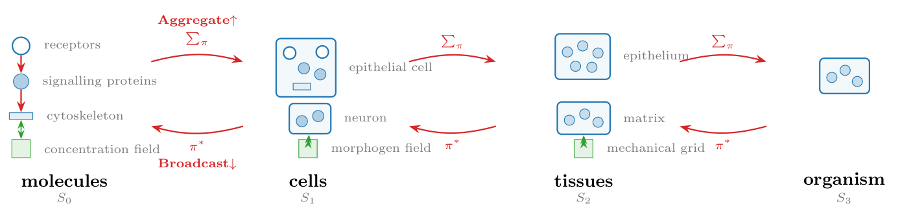

The abstraction
Sets, fields, operators, and schedules
Plexus is built from two kinds of object — sets and fields — and a small collection of operators that move information, force, state, or membership between them. A model is a schedule: an ordered composition of operators, iterated over time. Those four words — sets, fields, operators, schedules — are the whole vocabulary, and they are the missing primitive: the place where particle mechanics, cellular interaction, neural dynamics, and reaction networks all become the same kind of thing.
Sets and fields
Plexus has two objects.
A set is a discrete collection of elements of one kind: particles, cells, nuclei, metabolites, organisms. More precisely, a set is a collection of elements with the same state schema and the same admissible operators — every element carries the same state variables (position, velocity, concentration, …) and the same operators may act on it.
A field is a continuous quantity defined on a grid: a chemical concentration, an activation level, a stiffness map, a pressure, a substrate signal. (Formally, \(f:\Omega\to\mathbb{R}^q\) over a domain \(\Omega\).)
Operators move state between these objects, and a model is a scheduled composition of them. Fields are not contained by sets and do not contain them; a set and a field meet only through an exchange operator — secretion, sensing, particle–grid transfer, field sampling.
Sets and types
A new kind of object is a new set. The same object with different parameters is a new type inside that set:
new kind of object → new set
same object, new params → new type inside that setIn a spec, types: means parameter variants inside one set. Soft and stiff cells are two types of the same cell set: they share the same state variables and the same operators, and differ only in a parameter (here Young’s modulus). A nucleus, by contrast, is a different set — it has its own state and its own operators.
sets:
cell:
n: 100
types:
soft: {fraction: 0.5, youngs: 40}
stiff: {fraction: 0.5, youngs: 200}
nucleus:
parent: cell
per_parent: 1
membrane_particle:
parent: cell
per_parent: 64cell,nucleus, andmembrane_particleare different sets — different state, different operators.softandstiffare types insidecell— same state and operators; only the parameters differ.
Keeping the two apart keeps operators simple: an operator names the one set it acts on (at: nucleus) and never branches on a role flag at run time. A type is handled by a per-element parameter lookup, not by a separate code path.
The containment graph
Sets may contain other sets through parent maps. A nucleus belongs to a cell; a membrane particle belongs to a cell; a metabolite belongs to a cell. Each parent map,
\[\pi_{\alpha\to\beta} : S_\alpha \longrightarrow S_\beta,\]
assigns every element of one set to the element of another that contains it. These maps form a containment graph, not a fixed scale ladder: a set may have several child sets at once, and a cell is assembled from all of them.
So a cell is not one fibre. It is a bundle of fibres. The fibre of a parent map over an element \(b\) is everything that maps to it — \(\pi_{\alpha\to\beta}^{-1}(b)=\{x : \pi_{\alpha\to\beta}(x)=b\}\); the fibre of \(\pi_{\text{membrane}\to\text{cell}}\) over a cell \(c\) is the membrane particles of \(c\). The cell is the union of all its child fibres — membrane particles, cytoplasmic particles, nucleus, metabolites — each a distinct set mapping to the same parent.

Formally the container is a directed acyclic graph (sets are nodes, parent maps are directed edges, no cycles); the familiar \(S_0\to S_1\to S_2\) scale ladder is just the chain-shaped special case. Each set carries its own state schema and operators, so adding structure is adding a set and a parent map — never an engine change. (For the formally inclined: this is the many-sorted, or typed, discipline an ECS or a relational database already uses — one sort per set, joined by maps.)
The distinction between a new set and a new type can be read straight off a table:
| Different sets (\(S_\alpha\)) | Types within one set (\(\tau\)) | |
|---|---|---|
| example | membrane vs nucleus vs metabolite | soft cell vs stiff cell |
| differ in | state space + operators | only parameter values |
| in the spec | separate sets: with parent: |
a types: block inside one set |
| dispatch | by name (at: nucleus) |
per-row lookup \(p[\tau(i)]\) |
Operators
A GNN is an operator \(\mathcal{O}\) dispatched by the relation it acts on. An operator changes exactly one of the three things the container holds: the state on the nodes, the relations between them, or the entities themselves. Four dynamics operators move state along a fixed structure, one per relation the container admits. Rewire changes the relations — the edge set \(E\), which nodes interact. Divide and Die change the entities — the node set \(|S_k|\), which nodes exist. Those last three return no state delta. The four dynamics operators:
\[ \begin{aligned} \textbf{Lateral}\quad & \mathcal{O}_E,\ E\subseteq S_k\times S_k && \text{(ODE interaction } + \text{ graph Laplacian)}\\ \textbf{Aggregate}\ \uparrow\quad & \textstyle\sum_{\pi}: S_k \to S_{k+1} && \text{(reduction over fibres of } \pi)\\ \textbf{Broadcast}\ \downarrow\quad & \pi^{*}: S_{k+1}\to S_k && \text{(lift along } \pi)\\ \textbf{Exchange}\quad & \mathcal{S},\mathcal{G}: S_k \leftrightarrow F && \text{(push / pull; bipartite)} \end{aligned} \]
Two pieces of notation: \(S_k\times S_k\) is the set of all node pairs, so an edge set \(E\subseteq S_k\times S_k\) is simply a graph on \(S_k\) — which nodes interact (e.g. neighbours within a cutoff radius, or a fixed connectome). And \(\mathcal{S},\mathcal{G}\) are the two halves of a field coupling: push \(\mathcal{S}:S_k\to F\) writes object state into the field (set → field), while pull \(\mathcal{G}:F\to S_k\) reads it back (field → set).
Lateral \(\mathcal{O}_E\). Message passing within one scale along the edges \(E\). It carries the within-scale physics: pairwise interactions (forces, adhesion, signalling) plus a graph Laplacian that diffuses or smooths quantities over the edges. Examples: particle–particle elasticity, cell–cell flocking or adhesion, neuron–neuron signal propagation.
Aggregate \(\textstyle\sum_\pi\) (up). Pools each parent’s fibre into one quantity — a cell’s position is the mean of its particles, its metabolic state the sum over its molecules. This is how fine-scale dynamics are summarised into, and so move, the coarser object above.
Broadcast \(\pi^{*}\) (down). The adjoint of Aggregate: it copies a parent’s state to every child in its fibre, so a decision taken at the cell level (a body force, a polarity, a signalling output) is applied identically to all of that cell’s particles. Aggregate and Broadcast are a matched up/down pair on the same map \(\pi\).
Exchange \(\mathcal{S},\mathcal{G}\). Couples a set to a field: push \(\mathcal{S}\) deposits/secretes object state into the field (set → field), pull \(\mathcal{G}\) samples/senses the field back onto the objects (field → set). The relation is bipartite (objects \(\leftrightarrow\) grid); it is exactly the MPM particle–grid transfer (P2G/G2P) and chemotactic secretion/sensing.
Rewire \(\mathcal{R}\) (relations). Rewire changes the relation \(E\subseteq S_k\times S_k\) on which the lateral operators act — which nodes are neighbours — and returns no state delta. A geometric relation is rebuilt every tick from the live configuration (a radius graph: all pairs within a cutoff; or a \(k\)-nearest-neighbour or Delaunay graph), so the interaction graph tracks motion, growth, and division; a fixed relation (a connectome) is built once and never rewired. Rewire is of a different nature from the other five: it neither moves state nor changes who exists — it maintains the scaffold the dynamics run on. Separating who interacts (Rewire) from how they interact (Lateral) also turns a dense \(O(N^2)\) force law into \(O(|E|)\) message passing.
Divide and Die (entities). The dynamics operators move state and Rewire moves relations, both while the node set stays fixed; living matter also rewrites its own membership. Divide \(\mathcal{B}: x \mapsto \{x',x''\}\) (proliferation) and Die \(\mathcal{D}: x \mapsto \varnothing\) (apoptosis / efflux) are the only operators that change the entities themselves — the cardinality \(|S_k|\). For a living system they are as primordial as the four dynamics operators: a tissue is defined as much by the cells it makes and loses as by how they move. Everything else assumes the cells it acts on already exist.

Differentiating division and death
Changing \(|S_k|\) is the one move that resists automatic differentiation: it alters a tensor’s shape, and “does this cell divide?” is a discrete event with no useful gradient. Plexus keeps differentiable with a continuous-occupancy formulation. Rather than resize, hold a fixed buffer of \(N_{\max}\) slots and give every element a mass \(w_i\in[0,1]\):
- Die decays \(w_i\to 0\) — the slot goes dormant, not deleted.
- Divide activates a dormant slot, copies the mother’s state with a small perturbation, and splits the mass \(w\to(\tfrac{w}{2},\tfrac{w}{2})\).
Every operator then honours \(w\): Aggregate becomes a mass-weighted reduction \(\left(\sum_i w_i x_i\right)/\sum_i w_i\), Lateral weights each message by \(w_j\), and so on — so the boolean selector mask is just the \(\{0,1\}\) special case of \(w\). The trajectory between events is now smooth in \(w\), so gradients flow on a fixed-shape tensor (and torch.compile still applies).
The one genuinely non-differentiable part — the integer decision of when to divide or die — is handled separately: a straight-through or Gumbel estimator to learn a division policy; a score-function (REINFORCE) gradient for an expected objective w.r.t. division/death rates; or black-box search (UCB/CEM) when the objective is itself discrete (final count, fraction escaped). This is the use both recipe applied to structure: gradients for the continuous interior, black-box for the discrete choices.
Sets, fields, and these operators are the entire vocabulary. The wager of Plexus is that this is enough to describe a complex living system — that everything from mechanics to morphogenesis to division and death is some composition of them over a hierarchy of sets and fields.
Dynamics: a schedule
A simulation is a multi-rate composition of operators, declared as a Schedule. In math terms, one tick is the composition
\[\Phi=\mathcal{O}_n\circ\cdots\circ\mathcal{O}_1,\]
and the dynamics is its iteration \(x_{t+1}=\Phi(x_t)\) — a discrete flow. Multi-rate means the operators need not all fire on every tick: a slow process (diffusion, cell division) can be scheduled to act once every \(k\) ticks, while a fast one (mechanics) runs every tick, so a single Schedule interleaves dynamics that evolve on different time scales. Each operator is pure: instead of editing the state in place, it only returns its contribution — a delta \(\Delta_i\) (a time-derivative term) for the sets it touches. The schedule sums the deltas acting on each set and integrates once per tick.
An operator declares the order of its delta, since a time-derivative can be of position or of velocity. A first-order (overdamped) operator returns a velocity, integrated \(x_{t+1}=x_t+\Delta t\sum_i\Delta_i\); a second-order (inertial) operator returns an acceleration, integrated \(v_{t+1}=v_t+\Delta t\sum_i\Delta_i,\ x_{t+1}=x_t+\Delta t\,v_{t+1}\). The order is a fixed property of each operator (PREDICTION): attraction–repulsion is first order, boids flocking is second; all operators on one set must agree, so the set integrates as a single order. Friction in the inertial case is itself an operator (a drag delta \(-\kappa v\)), not a special term in the integrator.
Two consequences follow: several operators may act on the same set in one tick (their deltas simply add — none overwrites another), and because nothing is mutated in place, gradients flow through the sums and the integrator, so the whole rollout stays differentiable. The LLM searches over schedules and operator parameterizations — one well-defined action space instead of per-domain code.
Glossary
| Concept | Set/operator term | Symbol | Code |
|---|---|---|---|
| collection of like nodes | set (level) | \(S_k\) | Level |
| a single node | element | \(x\in S_k\) | row of Level.state |
| learnable per-node code | embedding | \(a_i\) | Level.embedding |
| containment | partition | \(\pi_k\!:\!S_k\!\to\!S_{k+1}\) | Level.parent |
| within-set links | relation | \(E\subseteq S_k\times S_k\) | Level.edge_index |
| continuum quantity | field | \(f:\Omega\to\mathbb{R}^c\) | Field |
| dynamics (GNN) | operator: ODE+Laplacian | \(\mathcal{O}\) | Operator |
| within-set op | lateral | \(\mathcal{O}_E\) | Lateral |
| up op | reduction over fibres | \(\sum_\pi\) | Aggregate |
| down op | lift | \(\pi^{*}\) | Broadcast |
| set \(\leftrightarrow\) field op | transfer | \(\mathcal{S},\mathcal{G}\) | Exchange |
| rebuild the relation | relations: rewire | \(\mathcal{R}\!:\,\to\!E\) | Rewire |
| make an element | entities: division | \(\mathcal{B}:x\!\mapsto\!\{x',x''\}\) | Divide |
| remove an element | entities: death | \(\mathcal{D}:x\!\mapsto\!\varnothing\) | Die |
| per-element occupancy | occupancy | \(w_i\in[0,1]\) | Level.occ |
| the container | hierarchy | \((S_\bullet,F_\bullet,\pi_\bullet)\) | Hierarchy |
| the model | composition of ops | \(\mathcal{O}_n\!\circ\!\cdots\!\circ\!\mathcal{O}_1\) | Schedule |